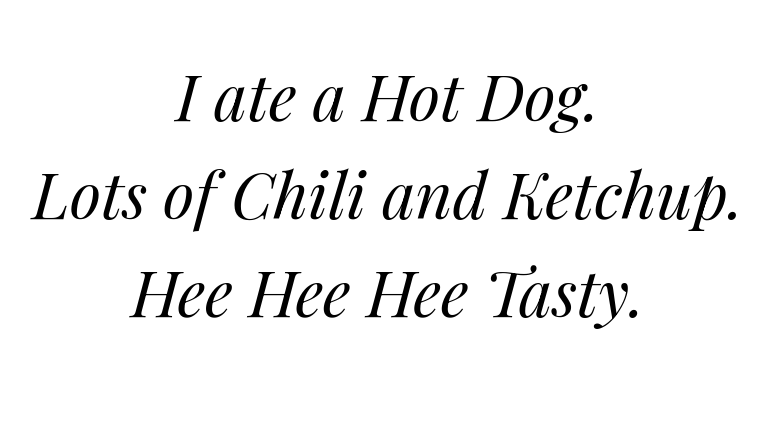

brief
this page is a dedication to my haikus. this is a junkpage just meaning its not on the navbar and wont be updated with any priority.
I don't have much of a history with haikus, the first one post wasn't technically by me. it's story is listed underneath it. hope you think these are cute, theres not much else to 'em.
haikus
"poopy" (by oi) [02/22/2022]
the first haiku i had a touch in. based on a true story, i finished an exam and posted in a chat "Finished an exam Had to hold in a poop Not too happy". which my good friend oi took the initiative to convert to the haiku before you. which is really what set all this in motion.
"hotdog" [07/17/2022]
not much, i wrote it while playing in a yugioh tournament and eating a hotdog. the only note was the last line was originally was "haha very tasty" which my friend miles correctly noted wasn't 5 syllables and was edited and i had to shamefully delete the original tweet.
"trans woman's apartment" [07/27/2022]
this one isn't based in as much experiance, i simply feel like this what a lot of transwomen identify with. most trans women's apartments seem like old game consoles and being taken advantage of.
"bad vegan" [07/29/2022]
don't read much into or the title. im not a vegan myself and i simply ate pork rinds the morning. they were advertised as pork skins which isn't how i've usually head them called. but the name really had me thinking man what a uhm cruel and grotesque thing to eat: fried skin of our animal slaves.